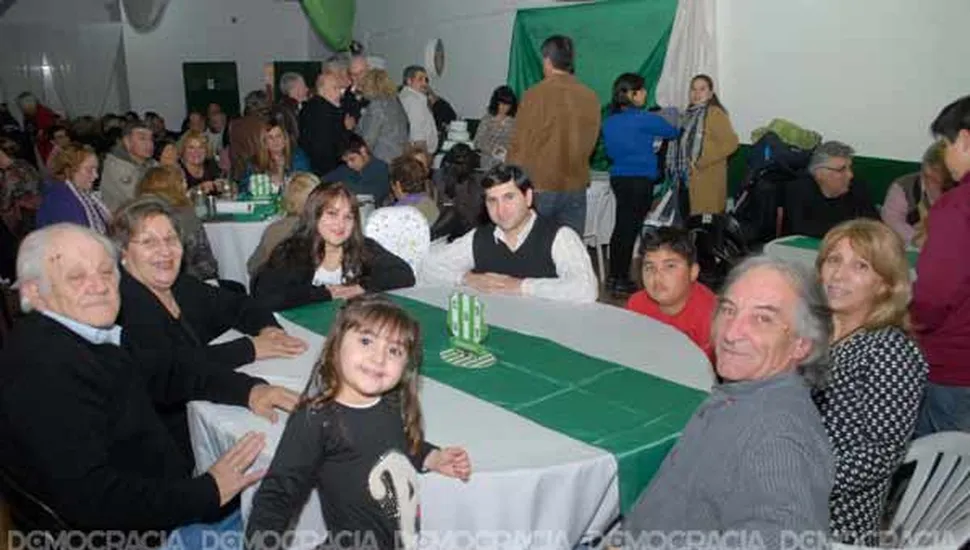

Un punto de encuentro
Los clubes de barrio tienen su historia. Durante décadas han sido un punto de encuentro para miles de personas, de familias, de generaciones que han establecido vínculos eternos en estos espacios. Por eso los clubes son importantes, porque aportan condimentos esenciales que pueden mejorar la calidad de vida de las personas
← Volver a Noticias